Author cycle
Requirements:
If authorDetail attribute has string value, then script inserts authorBegin and authorDetail on step 1. If script runs again, it inserts like step 2
If authorDetail attribute does not have string value, or if authorDetail element is not in article element, the start with step 1
Note that snippet files are in 'authors' folder which in the same directory as the active document.
The name of snippet files are the same as author attribute string.
Example:
author =
'Nathalie Prézeau'
Snippet file =
'Nathalie Prézeau.idms'
If there is no snippet in the author folder that matches the author attribute, the script skips step 4 and continues with cycle 1 if the authorDetail attribute exists, and to cycle 2 if the authorDetail attribute is missing or empty.
Before using the script
Make sure the XML elements author and content exist in the article XML element. The author should not be empty. The authorDetail XML element is optional: it can exist or not, or be empty.
The following paragraph styles should be defined in the document:
- author
- authorDetail
- authorEnd
Select one of the following either in the content or in the title:
- The text frame
- Some text
- Place the cursor into the text
Other types of selection are not allowed.
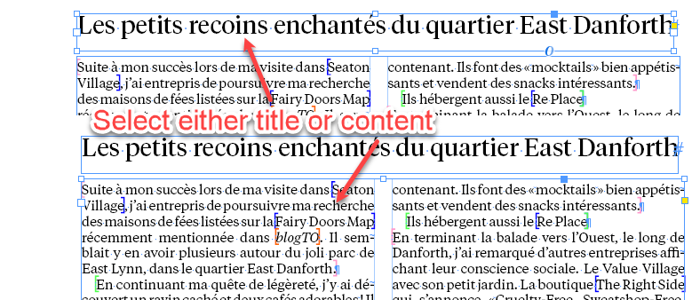
The script is supposed to run after the Place XML items on pasteboard script. It keeps a record of the run cycles using labels that are hidden from the user creating, deleting, removing two XML elements — author and authorDetail — in the content XML element. Don’t create them manually otherwise the script won't work as expected.
If the content frame gets overset, the script fits it to contents.
Here are screenshots illustrating how the script currently works:
Author Detail Exists
Before
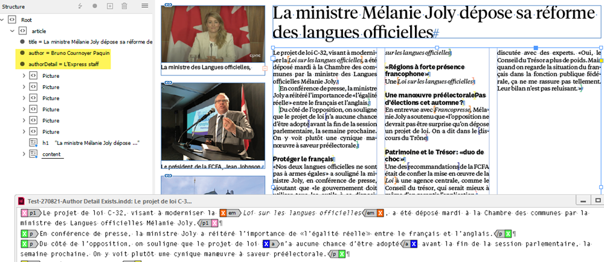
Cycle 1
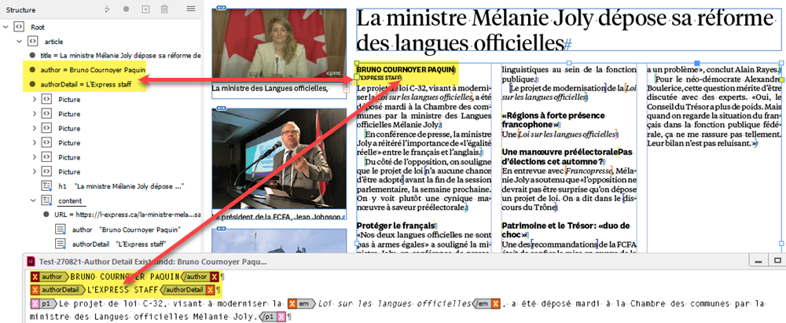
Cycle 2
Note: a return (empty paragraph) is always added outside any XML elements which helps avoid ruining the applied formatting while moving XML elements.
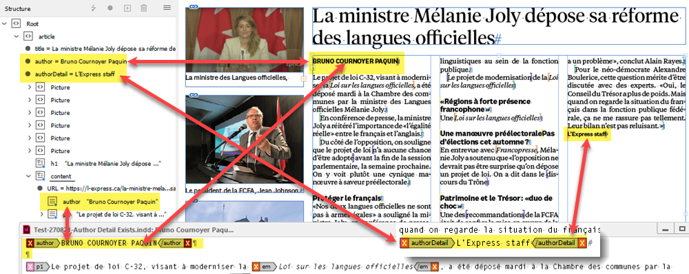
Cycle 3
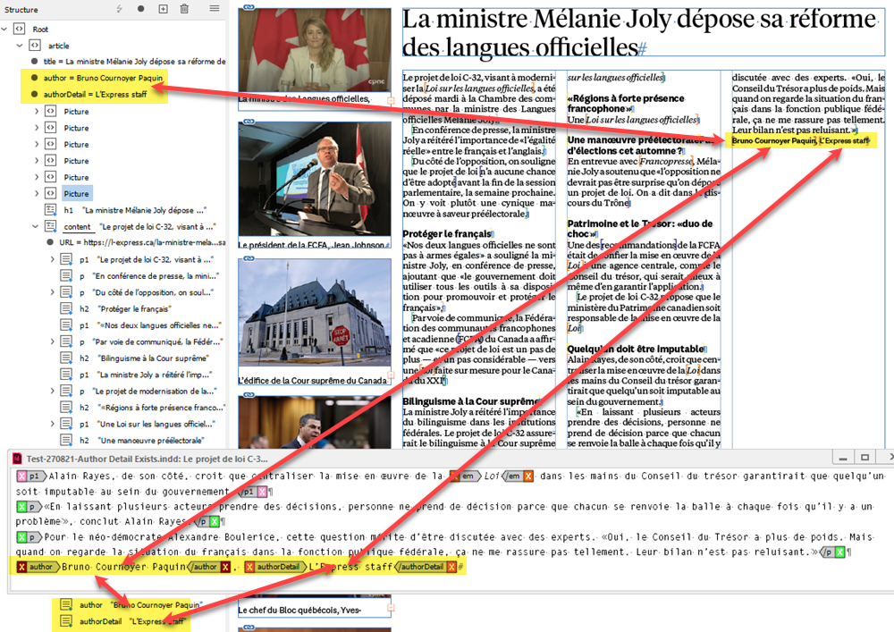
Cycle 4
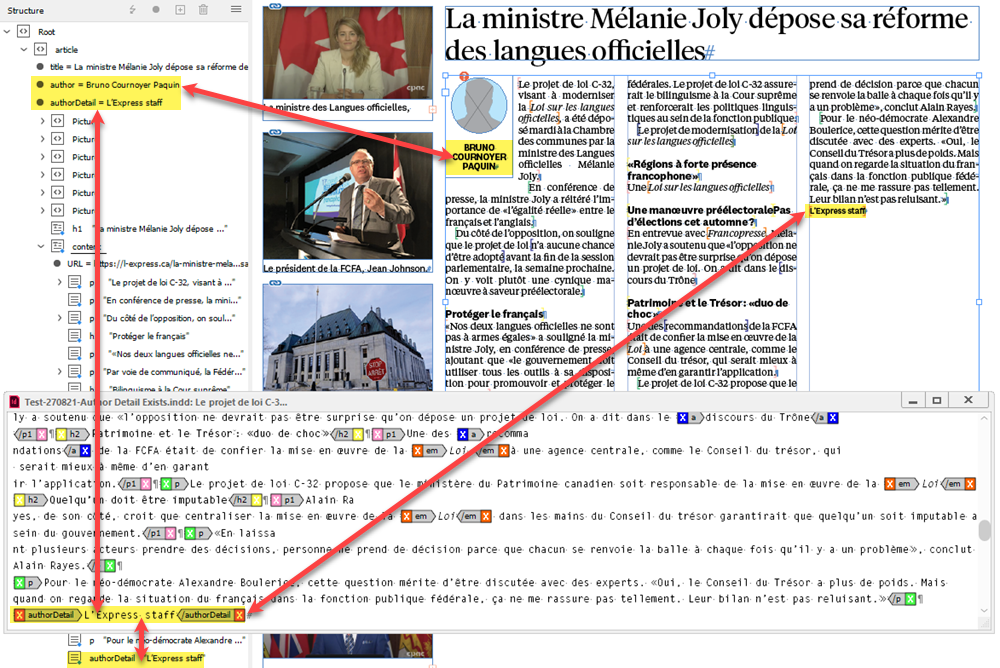
Cycle 5 is the same as 1
Author Detail Doesn’t Exist or Empty
Before
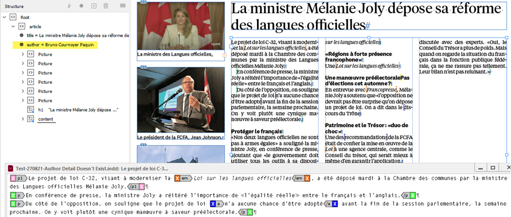
Cycle 1
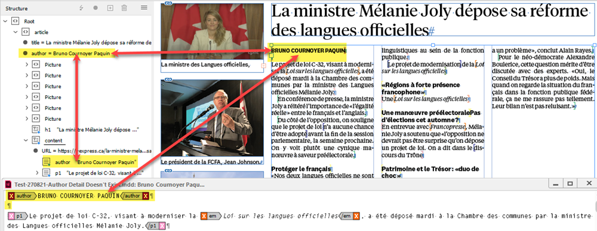
Cycle 2
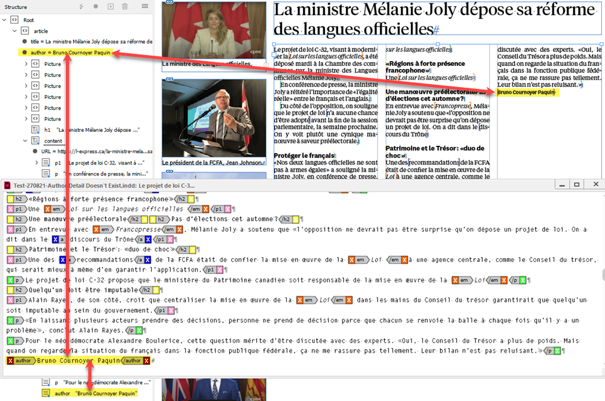
Cycle 3
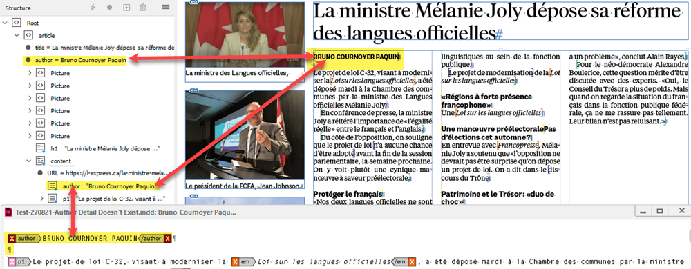
Cycle 4
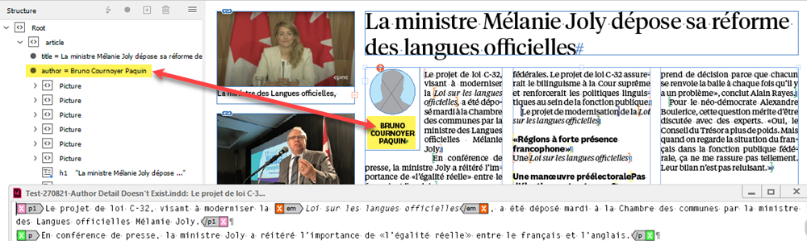
Cycle 5 is the same as 1
Click here to download the script.
Go back to the main Scripts for L'Express de Toronto Inc. page